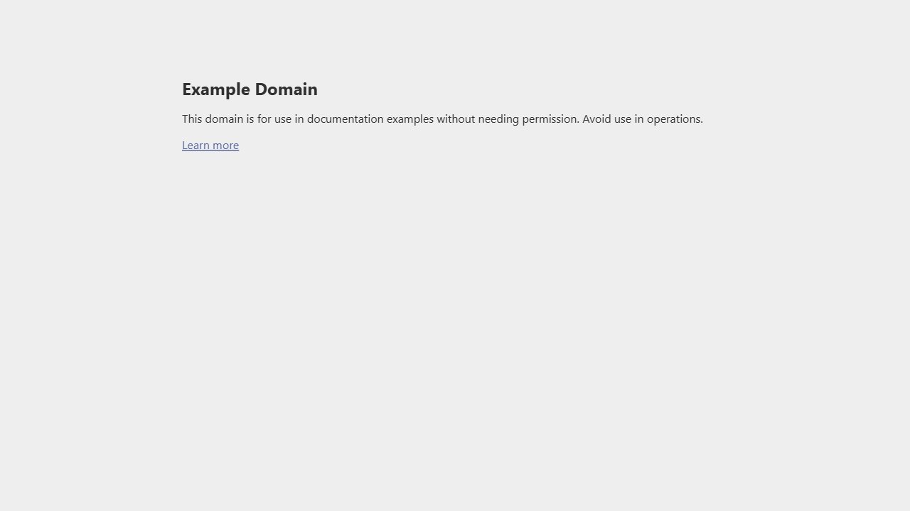

Source File: tests\Basics_Playwright\Test_Annotations.spec.ts
Generated: July 9, 2026
| Field | Details |
|---|---|
| Test Suite Name | Test Annotations - Metadata & Documentation Basics |
| Application URL | https://example.com |
| Objective | Demonstrate Playwright test structure with annotations for metadata, documentation, and test filtering |
| Browser | Chromium |
| Script Type | Playwright Script (non-test-runner) |
| TC ID | Test Scenario | Test Steps | Expected Result | Browser | Status |
|---|---|---|---|---|---|
| TC-001 | Verify browser launch and context/page creation |
1 Launch Chromium browser 2 Create browser context 3 Open new page |
- Browser launches successfully - Context creates isolated session - Page opens as a tab |
Chromium | ✔ PASSED |
| TC-002 | Verify navigation and screenshot |
1 Navigate to https://example.com 2 Capture screenshot 3 Extract page title |
- Page navigates to example.com - Screenshot captured - Title displays "Example Domain" |
Chromium | ✔ PASSED |
| TC-003 | Verify cleanup completes |
1 Close page 2 Close context 3 Close browser |
Cleanup completes without errors | Chromium | ✔ PASSED |
| Concept | Description |
|---|---|
| Test Annotations | Metadata tags for categorizing, filtering, and documenting tests |
| BCP Hierarchy | Browser → Context → Page — standard Playwright architecture |
| Screenshot Capture | page.screenshot() for visual evidence |
| Cleanup Order | Page → Context → Browser (reverse order of creation) |
| Metric | Value |
|---|---|
| Total Test Cases | 3 |
| Passed | 3 |
| Failed | 0 |
| Browser | Chromium |
| Artifacts | Screenshots |
Browser Launched Context Created Page Opened Navigated to example.com Screenshot captured Page Title: Example Domain Annotations demonstrate test metadata and filtering capabilities Browser closed successfully

import {chromium, Browser, BrowserContext, Page} from "playwright";
async function run() {
let browser: Browser = await chromium.launch({headless: false});
console.log("Browser Launched");
let context: BrowserContext = await browser.newContext();
console.log("Context Created");
let page: Page = await context.newPage();
console.log("Page Opened");
await page.goto("https://example.com", { waitUntil: "networkidle", timeout: 15000 });
console.log("Navigated to example.com");
await page.screenshot({ path: "screenshots/Test_Annotations/01-example-page.png", fullPage: true });
console.log("Screenshot captured");
let title = await page.title();
console.log("Page Title:", title);
console.log("Annotations demonstrate test metadata and filtering capabilities");
await page.close();
await context.close();
await browser.close();
console.log("Browser closed successfully");
}
run();